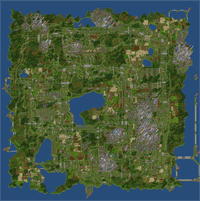
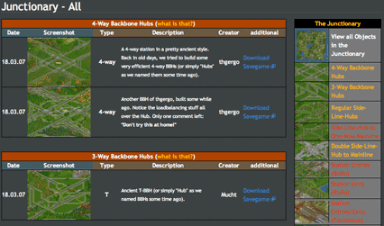

Weekly Review #2 2007

Back to topic. After quite some weeks of idleness the last week was great. A lot of new nicknames showed up at our IRC-Channel, like Phazrox, Teddy and Kejhic. I’ve also seen some spectators who had been to shy to get active like EoD and eJoJ. C’mon guys. It’s not to hard to join the games and you can’t do anything wrong. At this week we finished Sandbox Game 35 and Sandbox Game 36 is almost done too. Especially at the weekend a lot of players showed up and the progress was really amazing. It would take us ages to play those games alone. The activity is logged from our Bot _42_, and I had a closer look on the numbers. At the weekend, more than 6000 lines of chat have been produced. And two guys came under top 20 in only one week.
Besides I did some stuff with Photoshop and created this little top view of the Map from Sandbox Game 34. In my opinion it looks a little bit like Google Earth.
Ammler did a lot of work on the #openttdcoop NewGrf-Package which reached version 3 now. You will be always up2date if you have a look at the new section ‘Shortcuts’ at the right side. Maybe some more useful links will occur there soon.
On the Mainserver Mucht, Ammler and I finished the Tutorial Savegame and the first page is already written. Mucht is quite busy and had no time the last days. Anyway I think we can finish this within the next two weeks. Stay tuned, its HOT.


At the moment we don’t have too many objects in the Junctionary. It is up to you, to fill those pages with data, I am not sure whether we should also include non-openttdcoop like constructions or not. But maybe it gets a color-rich compendium somewhen.
You guys have been very active those days and our webstats say something similar, but I still miss the activity at blog and wiki.
Anyway the next game on our Sandbox Server will start soon. Feel free to join.
Categories: Weekly Review
XeryusTC April 17, 2007 05:57
Hmm, nice blog post :).
Ammler didn’t do much about the newgrf package btw, he just added the OpenTTD versions of the czech sets in the package, I included the windows (TTDPatch) newgrfs.
Mucht April 17, 2007 06:51
Great mapshot!